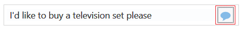

OpenWorld
2019 Hands-On Lab: Build a Skill with the Conversation Designer
Before You Begin
This 60-minute hands-on lab introduces you to the Oracle
Digital Assistant's Conversation Designer. This lab demonstrates
how you can generate a fully functioning skill from example
conversations between the user and the skill.
Background
The ability to rapidly develop a functioning skill, one that
typifies the interactions between the skill and its users, can
be a very useful feature for any company developing a
conversational interface for a number of reasons. These include:
Getting the buy-in and sign-off from your business on the
flow and function of the skill.
Road testing the conversation flow with target users to get
their feedback.
Providing skill developers with a concrete idea of the
conversation that they need to implement.
What Do You Need?
To complete this lab, you need an Oracle Digital Assistant
(ODA) cloud instance. You can get one using either of the
following approaches:
Before you can get a trial ODA instance, you need an Oracle
Cloud account. If you don't already have one, go to http://oracle.com/oow19freetier to sign up.
Please sign up with the email you used to register for Oracle World
Please chose Phoenix as the home region.
You should get an email within a few minutes to confirm the account.
Click the navigation menu () in the top left corner, scroll
down to and expand Platform Services, and then click Digital
Assistant.
Click Instances.
Click Create Instance.
In the Details section of the Instance area,
fill in the following details:
Instance Name: Enter a name that reflects usage
of the environment. For example, for a development
environment, you might use something like oda-dev1.
You can use a name of up to 20 characters. It must
start with a letter, and can contain only letters,
numbers and hyphens (-). It cannot end with a hyphen
(-).
Use a different name for each environment you create.
Description: (Optional) Enter a brief description
of what the instance will be used for.
Notification Email: Status reports are sent to
this email, including notice of when your instance has
been created.
Region: Select Phoenix
Tags: (Optional) Add tags and assign tags to this
service.
Use the following placement tag from Oracle: ODAPHX_CODE_2019
In the Special Instructions section of the Instance
area, select the I have special instructions from
Oracle checkbox.
Input your placement tag.
Click Next.
Review the instance details, then click Create.
There will be a short wait before you receive an email
confirming that your Digital Assistant instance is
ready for you to sign into.
If it takes more than a few minutes to finish, try
refreshing the page in the browser.
Once the instance is created, click and select Digital Assistant UI
Designer.
A new browser tab will be opened with the Digital Assistant
Designer UI.
Log in to the instance using the credentials provided by
your lab instructor.
After successfully logging in, you will land on the ODA home
page.
Review
the Conversation Flow
You can conceptualize the user-skill conversation in different
ways before you actually begin building it with the Conversation
Designer. For example, you can sit down with a business
stakeholder or target user and create a overall flow based on
how they envision a typical conversation. For the purposes of
this lab, we've already assembled the following flow for the
conversation that you will realize using the Conversation
Designer.
You'll notice that there are four top-level flows that can be
triggered through natural language processing (NLP):
Live Chat -- Executed when the skill understands that user
wants to speak to an agent. It then hands the user off to a
call center. (For this lab, you won't actually be configuring
the agent hand off in Oracle Service Cloud. The goal here is
to just demonstrate the flow.)
Buy Goods -- Presents a carousel of cards, each with a
different product. Each card directs the user to the company's
website.
Product Question -- Recognizes that the user wants to
ask a question about a product. It presents a list of help
topics, such as registering a warranty, checking a warranty,
or product support.
Download User Manual -- Prompts the user for product
information and then presents the appropriate PDF that the
user can download.
Create
Tasks
You need to create a new skill when you use the Conversation
Designer (you can't use it with an existing skill), so start off
by creating a new skill in your ODA instance. From your new
skill, you'll access the Conversation Designer and then begin
building the tasks.
In your ODA instance, click the left menu (), expand Development,
and then click Skills.
Click the New Skill tile.
Complete the Create Skill dialog by giving your skill a
name. If you're sharing an instance with other developers,
start the name with your initials. For example:
GR_ConversationDesignerSkill.
Click Create.
In the left navigation bar, click Conversation
Designer ( ).
In the Welcome screen, add the following and then click Create.
In this step, you're going to create a sample agent
escalation conversation, where the chat is transferred from
the skill to a live agent upon the user request. As mentioned
previously, you're not going to actually configure the agent
hand-off to Oracle Service Cloud. Instead, your going to add
the user request and a series of skill responses that would be
typical for an escalation scenario.
In the Add Message dialog, first select Text
(if it's not already selected) and then enter I want to
speak to a human. Note that Conversation Designer
classifies this input as INTENT UTTERANCE.
For this task, you're going to build a conversation where
the user searches for, and buys, a television. After you
enter the initial user request message, you're going to
create a series of skill messages that prompt the user
through the transaction. These messages include lists of
options, a confirmation message, and a carousel of cards
with images and clickable actions.
Click Buy Goods in the Tasks menu.
Click .
Enter I'd like to buy a television please. Notice
that the Conversation Designer again classifies this type
of statement as an INTENT UTTERANCE.
Click Done.
Click .
Enter OK -- We have a great selection at low, low
prices! Conversation Designer classifies this
message as OUTPUT.
Click Done.
Click
again. In the Add Message dialog, select Actions.
In the Bot's Message field, enter What size of TV
are you interested in?
Click .
Enter Up to 32 inch. Because this user message
references an action whose value was defined already, the
Conversation Designer classifies it as CHOICE since the
user is choosing a known value.
Click Done.
Click
and then enter the confirmation message, Here are our
TVs Up to 32 inch.
Because this message contains one of the values set
for the action, it will enable the skill to populate the
user's choice in the message at runtime. Be sure to enter the same
letters and characters that you used in the action (Up
to 32 inch, for example, not Up to 32-inch).
If you don't, the skill will output this message as
static text.
Click
Done.
Click
again, but this time, select Cards.
In
the General tab, enter Here are our TVs that are
currently in stock in the Bot's Message
field.
For this conversation, the skill handles various product
support requests with a list of actions that route to other
tasks. To enable this routing, you will add actions that
branch to subtasks. As the name implies, subtasks perform
supporting functions. Unlike tasks, they contain
conversations that have been started by the skill, not by a
user's intent utterance.
Click Product Question in the Tasks
menu.
Click .
Enter I have a product question.
Click Done.
Click .
In the Add Message dialog, click Actions.
In the Bot's Message field, enter Ok, -- for product
questions, I can help you with the following.
Enter Warranty Registration in the Action 1
field.
Click the menu ()
that's next to the field and then choose Branch
Conversation from the Action Type menu.
Repeat these steps to create two more actions, Warranty
Check and Support. These two actions will also branch to
subtasks that you will create later on.
For the Warranty Check action, enter Warranty
Check as the branched conversation.
For Support, enter Support as the branched
conversation.
For this final task, you'll create a conversation where
the skill replies to the user's request for a product
manual. To enable this download, you will add an attachment
message that points to the URL for the manual, which is a
PDF document.
Click Download Manual from the Tasks
menu.
Click .
Enter I want to download a manual for my TV.
Click Done.
Click .
Enter Can you please confirm the product ID?
Click Done.
Click .
Enter ABC-12345. Notice that the Conversation
Designer classifies this input as NUMBER.
You added Warranty Registration, Warranty Check, and Support
subtasks when you configured action routing for the Product
Question task. In this section, you're going to build them out
with their own messages.
Click .
Enter OK -- I can register your warranty. Can you
confirm the email address?
Click Done.
Click .
Enter name@example.com. Note that the Conversation
Designer classifies this as EMAIL.
Click Done.
Click .
Enter OK--we will email our warranty registration form
to you.
Click Done.
Build the Warranty Check Subtask
Click Warranty Check in the Tasks list.
Click .
Enter OK--let's check your warranty. Please enter the
product serial number.
Click Done.
Click .
Enter 12345678. Note that the Conversation Designer
classifies this as NUMBER.
Click Done.
Click .
Enter OK--I can confirm 12345678 is currently in
warranty until the 12th of October 2019. Be sure that
the serial number matches your input in the previous user
message.
Click Done.
Build the Support Subtask
Click Support in the Tasks list.
Click .
Click Actions.
Enter Would you like to speak to an agent or raise a
ticket? in the Bot's Message field.
In the first action field, enter Speak to a live agent.
Click the menu ()
next to the field and then choose Branch
Conversation from the Action Type menu.
Click .
Enter OK--I've opened a support ticket on product
12345678. Someone will contact you shortly.
Click Done.
Preview
the Mockup
Now that you've completed the mockup, you can preview its
various tasks and see how the conversation flows. In fact, you
can preview a task while you're building it to check your work.
While building the flows, you probably noticed the check mark
that appears next to actions and cards. This denotes a default
action or choice.
The preview replays the conversation according to the default
actions, so by resetting the defaults, you can preview different
outcomes. In this section, we're going to change the default
settings for the Buy Goods and Product Question tasks because
they have multiple actions.
Preview the Buy Goods Task
Click Buy Goods in the Tasks list.
Click Preview Your Task! (located at the
upper right).
Click Send Message () to enter the initial user
message (I'd like to buy a television please) after
it's populated in the chat.

When the preview outputs Up to 32 inch, click
.
When you click to enter Buy
at the end of the flow, a separate tab opens for the target
URL associated with the Panasonic 75 HD, the Panasonic
website.
Return to the browser tab that's running Oracle Digital
Assistant.
Click Back to Mockup.
Change the Default Card for the Buy Goods Task
The browser opens the Panasonic website because the
Panasonic 75 HD is the default choice (It bears the check mark
in the preview). Let's try something else.
In the preview, click the skill's Here are our TVs
currently in stock message.
Return the browser tab that's running Oracle Digital
Assistant, then click Back to Mockup.
Change the Default Action
The default TV size in the preview mode is Up to 32 inch.
Let's see what happens in the preview when you change the
default setting for the size options.
Select the skill's What size of TV are you interested
in? message in the preview. (You may need to scroll
up.)
Click
in the context menu.
In the Edit Message dialog, select the Actions
tab if it isn't already open and then click the menu () next to the Up to 48 inch action.
Click Preview Your Task! and then start
the conversation again by clicking after each user message. So
far, the user's responses have been the same as the default
values, but in this case, the preview ignores the new
default of Up to 48 inch and proceeds with Up to
32 inch. Why? Because the user's Up to 32 inch
message overrides the default setting in the preview mode.
If you hadn't added this user message, then the conversation
would play according to the default value. When you actually
chat with the skill later on, you can enter any of these
values.
Choose Default and then click Done.
Click Done again to close the Edit Message
dialog.
Click Product Question in the Tasks
lists again and then click Preview Your Task!
and then click
to replay the conversation. Note that conversation now ends
with Log Ticket subtask.
Generate
the Skill and Take a Look at the Artifacts
With your tasks complete, you're now ready to generate an
actual skill.
Click Generate Skill ().
Click Generate in the Generate Skill
dialog.
Click Train ().
.
Click Submit in the Train
dialog.
The Conversation Designer creates a complete dialog flow
definition along with intents and entities that it interpreted
from the tasks and their messages. Let's take a quick look at
some examples.
View the Generated Intents
Click Intents () in the left
navigation bar. Notice that the Conversation Designer has
generated a Greeting intent along with intents that match
each task. It has also added training data that it
interpolated from the task name and the user messages that
it classified as INTENT UTTERANCE.
Description
of the illustration.
For example, click BuyGoods. Notice that
both the name of the task and the user message (I would
like to buy a television set please) are incorporated
into the training data along with variants of these phrases. Description
of the illustration.
View the Generated Entities
Click Entities () in
left navigation bar. The Conversation Designer used the bot
and user messages (and their various relationships to one
another) to create a series of entities and composite bag
entities. There are are a lot of them, so we're just going
to look at one of them. Description
of the illustration.
In this step, you're finally going to chat with the skill
itself and discover how the generated artifacts support its
understanding of natural language, its ability to route the
conversation, slot entity values, and validate user input.
Test the Buy Goods Task
Click the Skill Tester () in the left navigation bar.
Enter I want to buy a television in the chat
window.
Choose a size. Note that the skill confirms that size.
Click Reset (), located at the upper right hand
side.
Begin the conversation again by entering I want to buy
a television.
When prompted to choose a size, enter something that's not
one the values, like 100 or Huge. Notice that the skill only
accepts input that matches the action names.
Scroll through the carousel to select a TV, then click Buy.
The company website opens a separate tab.
Click
and then repeat these steps, varying the intent message (buy
TV, I wanna television, etc.) and choosing
different combinations of TV sizes and models each time. Be
sure to click
after each conversation. When you're done with this flow.
click .
Test the Product Question Flow
Enter I've got a question about my warranty.
Click Warranty Registration.
When prompted to enter an email address, enter what?
(or something else that's not formatted as an email
address). Notice that skill is asking for a specific entity
type, EMAIL.
Enter any numeric string (like 9898989898989). Note that
the confirmation message references that value. If you
entered a string of letters (wESdlfjlakdkl, for
example), the skill would prompt you for a NUMBER entity
value.
Click the link. You may need to open this document in
another tab. For example, if you're using Windows,
right-click your mouse and then choose Open Link in
New Tab.
 OpenWorld
2019 Hands-On Lab: Build a Skill with the Conversation Designer
OpenWorld
2019 Hands-On Lab: Build a Skill with the Conversation Designer Before You Begin
Before You Begin
 and select Digital Assistant UI
Designer.
and select Digital Assistant UI
Designer.

 Review
the Conversation Flow
Review
the Conversation Flow Create
Tasks
Create
Tasks ), expand Development,
and then click Skills.
), expand Development,
and then click Skills. Create
the Sub Tasks
Create
the Sub Tasks Preview
the Mockup
Preview
the Mockup Generate
the Skill and Take a Look at the Artifacts
Generate
the Skill and Take a Look at the Artifacts Test
the Skill
Test
the Skill